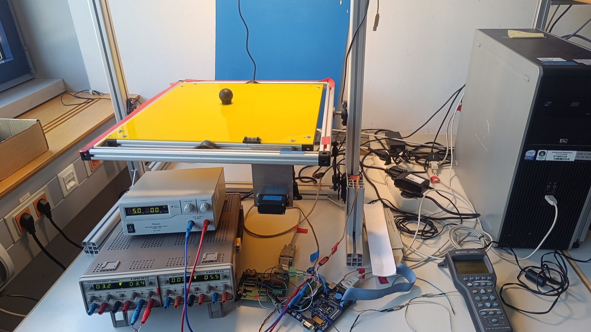

CAMERA TRACKING · PHYSICAL SETUP
Ball-on-plate demonstration
The recording shows the camera interface and the servo-driven plate responding as the ball moves.
ENGINEERING CASE STUDY / CONTROL SYSTEMS / 2026
Using camera measurements, model-based observers and Kalman filtering to estimate ball motion and control a servo-actuated plate.

01 / THE ENGINEERING PROBLEM
A ball on a tilting plate is an unstable control problem: a small tilt changes the ball's motion, while the camera directly measures position rather than velocity. The controller therefore needs an estimate of the ball's motion before it commands the plate's servos.
The project covers the workflow from a mathematical model and MATLAB simulations to C code for the STM32 control platform and a working physical setup.
02 / PROJECT DEMONSTRATION
The recording shows the camera interface and the servo-driven plate responding as the ball moves.
03 / MODEL, ESTIMATOR & CONTROLLER
MATLAB simulations describe the ball's motion on a tilted plate and include servo behavior in the higher-order model.
The project compares second- and third-order observers, a linear Kalman filter and an extended Kalman filter for estimating unmeasured states from position data.
The embedded control loop receives camera-derived ball positions, updates the state estimate and computes servo commands for the plate.
Simulation and plotting live alongside STM32-oriented C code for the estimator and feedback-control path.
04 / ANALYSIS & HARDWARE
The MATLAB results include a velocity comparison across observer and Kalman filter approaches. The plot shows how each estimator responds to the same recorded motion; no absolute accuracy figure was calculated from it.
05 / SOURCE CODE
The repository contains MATLAB simulations, the embedded C project, analysis plots and project documentation.